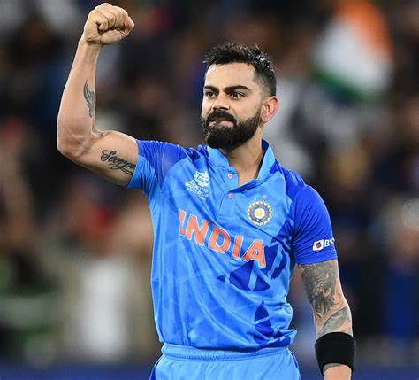
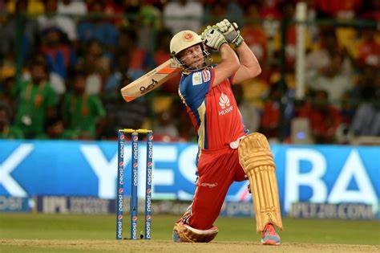
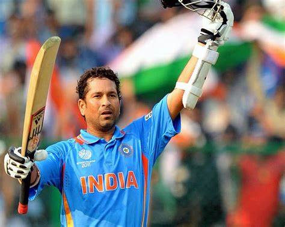

1. Virat Kohli
India
Virat Kohli, a name synonymous with modern-day cricket, has established himself as one of the finest batsmen in the world. Known for his aggressive batting style and unmatched consistency, Kohli's career is filled with record-breaking performances, both in One Day Internationals and Test cricket. His hunger for runs and remarkable fitness makes him a standout player.
Highlight: Scored over 70 international centuries.
2. AB de Villiers
South Africa
AB de Villiers, often hailed as one of the most versatile and innovative batsmen, has left cricket fans in awe with his range of shots. He could play everything from classic cover drives to outrageous scoops over the wicketkeeper’s head. His ability to adapt to any format of the game and change the course of a match in a few overs earned him the nickname “Mr. 360”.
Highlight: Fastest ODI century (31 balls).
3. Sachin Tendulkar
India
Widely regarded as one of the greatest cricketers of all time, Sachin Tendulkar’s cricketing career spanned over two decades. His ability to dominate bowlers in every part of the world earned him a special place in the hearts of cricket lovers. Tendulkar's sheer number of records and his longevity in the game remain unmatched.
Highlight: First cricketer to score 100 international centuries.
4. Ben Stokes
England

Known for his fighting spirit and never-say-die attitude, Ben Stokes is one of the finest all-rounders in modern-day cricket. His remarkable performance in the 2019 World Cup final and the Ashes test in the same year proved his ability to turn games single-handedly. His all-round contribution to the team makes him a critical player for England in all formats.
Highlight: Man of the match in the 2019 ICC World Cup final.